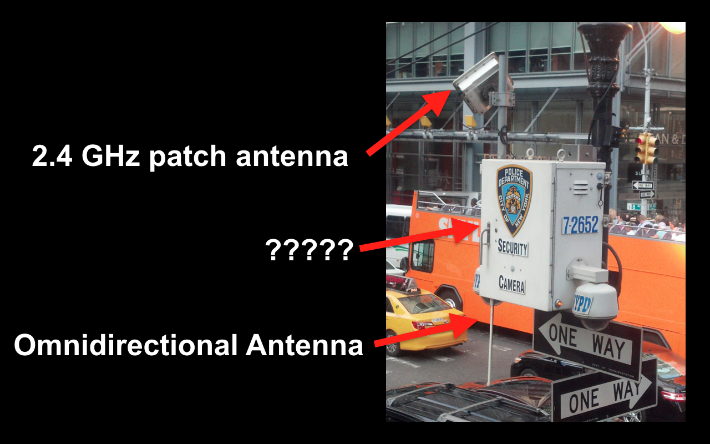
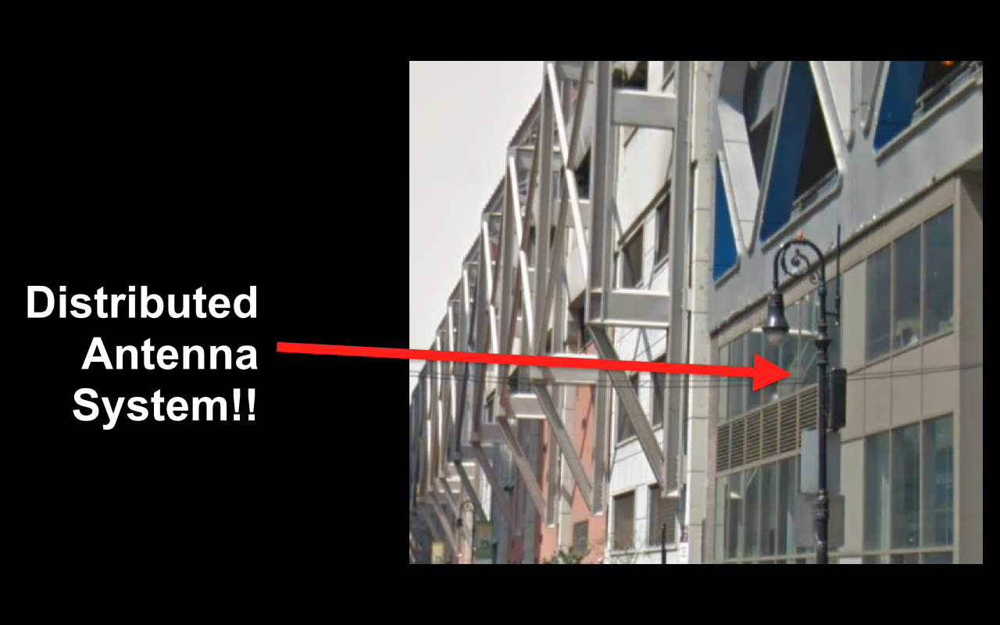
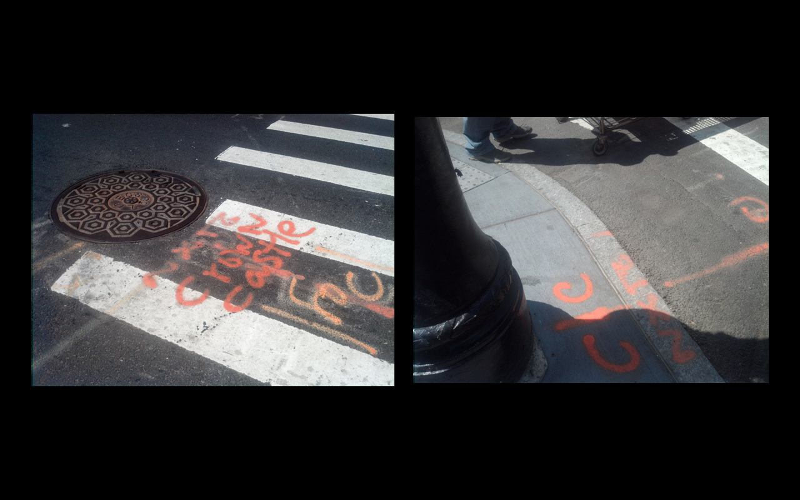

hello!
how do you see the internet?
well, that's how you use it.
what does the internet look like?
an abstraction
a kind of bad metaphor
but really the internet is a pile of stuff
like buildings
and antennae
and cables
this is all infrastructure
this is what happens when I talk to people about infrastructure
things that are designed to be ignored
things that we notice when they break
an example



how I feel when I see this stuff
sometimes how other people feel
the actual point is this
not just where the internet is
but why it's there
and who owns it
knowing how the internet works
knowing who it's working for
thanks!